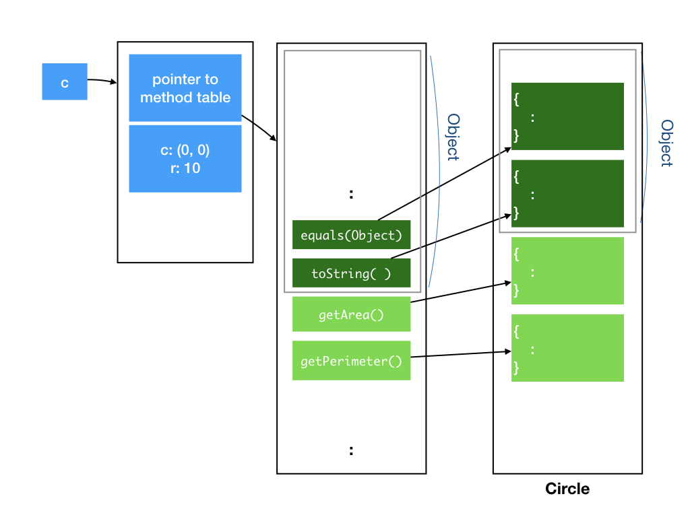
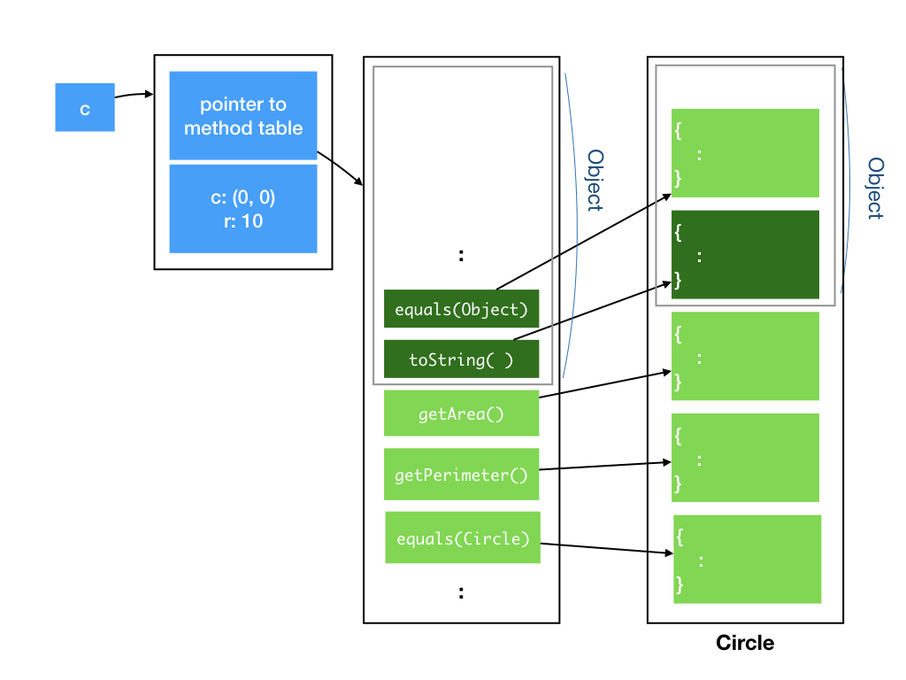

Lecture 3: Inheritance, Continued
Learning Objectives
At the end of this lecture, students should
- be familiar with how Java dispatches methods that have been overridden
- appreciate the usefulness of overriding
equalsandtoStringin theObjectclass - be exposed to the
Stringclass and its associated methods, especially the+operator - be aware that inheritance can be abused to provide bad code
- understand the differences between HAS-A and IS-A relationship
- be able to use composition to model classes with HAS-A relationship
- be able to use inheritance to model classes with IS-A relationship
- understand the Liskov Substitution Principle and thus be aware that not all IS-A relationship should be modelled with inheritance
- understand the purposes of the Java keywords
this,final,abstractanddefault
Method Overriding
During Lecture 2, I introduced the concept of inheritance. Today, let's go deeper into how inheritance and its associated concepts work.
Consider the class Circle, which inherits from Object. We have seen that Object defines some non-private methods, which can be inherited by Circle.
These methods will be made available in the Circle class. In the internal representation of the class, the methods will be made available in the method table of Circle. You can view the fields and methods of class Circle as containing the fields and methods of Object, followed by fields and methods defined in Circle.
The figure below illustrates this. I use a slightly darker green to represent the methods implemented in the Object class, and light green to represent methods implemented in the Circle class.

Recall that when a class implements an interface, an instance of that class can take on the type of that interface. Similarly, when a class inherits from a parent class, an instance of that class can take on the type of the parent class. So, we can do the following:
1 2 | Circle c = new Circle(new Point(0,0), 10); Object o = c; |
Line 2 assigns the circle object c to o of type Object. So, both o and c are referring to the same objects. Due to type checking at compile time, however, Java does not allow methods and fields in the subclass (e.g., Circle) that is not in the superclass (e.g., Object) to be called. In this example, only the methods known to Object can be accessed by o.
Now, consider what would happen if we override the method equals() from the Object class. This is what we did in the last lecture.
1 2 3 4 5 6 7 8 9 10 11 | class Circle implements Shape, Printable { : @Override public boolean equals(Object obj) { if (obj instanceof Circle) { Circle circle = (Circle) obj; return (circle.center.equals(center) && circle.radius == radius); } else return false; } } |
Equality for Point
Recall that we override equals because we want to compare the content of the two circles, instead of comparing if two circle references point to the same object. For the implementation above to be correct, we need to override the equals function for the Point class as well. This is not shown in class and left as an exercise.
The method table will update the entry for equals() to point to the implementation provided by the Circle class, instead of the Object class.

Now, consider what would happen if we overload the method equals() with one that takes in a Circle object. I also throw in a couple of System.out.print() to help us figure out what is going on.
1 2 3 4 5 6 7 8 9 10 11 12 13 14 15 16 17 | class Circle implements Shape, Printable { : @Override public boolean equals(Object obj) { System.out.print("equals(Object) called\n"); if (obj instanceof Circle) { Circle circle = (Circle) obj; return ((circle.center.equals(center) && circle.radius == radius); } else return false; } public boolean equals(Circle circle) { System.out.print("equals(Circle) called\n"); return ((circle.center.equals(center) && circle.radius == radius); } } |
Since this new equals() method does not override the method in Object, it gets its own slot in the method table of Circle, instead of reusing one from the Object.

Now, consider which version of equals are called by the following:
1 2 3 4 5 6 7 8 9 10 11 | Circle c1 = new Circle(new Point(0,0), 10); Circle c2 = new Circle(new Point(0,0), 10); Object o1 = c1; Object o2 = c2; o1.equals(o2); o1.equals((Circle)o2); o1.equals(c2); c1.equals(o2); c1.equals((Circle)o2); c1.equals(c2); |
Lines 6-9 call equals(Object) defined in Circle， while Lines 10-11 call equals(Circle) defined in Circle. Let's look at why for each one:
- Line 6 calls
equalsof anObjectobject on anObjectobject. Java checks through all methods defined inObject, and finds a method that matches the signature, which is theequals(Object)(whichCirclehas overridden). This is the one that will get called. - Line 7-8 call
equalsof anObjectobject on aCircleobject. Java checks through all methods defined inObject, and finds one method that matches the signature, which isequals(Object)(whichCirclehas overridden). Even though there is another methodequals(Circle)defined, it is defined as part of theCircleclass, which Java refuses to access becauseo1is declared to have the typeObject. Since the only method that Java can find has an argument of typeObject, the argument is cast as anObjectwhenequalsis invoked. - Line 9 calls
equalsof aCircleobject on anObjectobject. Java finds a method with matching signature,equals(Object), and invokes that. - Final 10-11 calls
equalsof aCircleobject on aCircleobject. Java finds a method with matching signature,equals(Circle), and invokes that.
Another question that came up is why we need to override equals in Object, rather than just using the Circle-specific equals(Circle). As shown above, only when an object declared as Circle calls equals on another Circle object, the Circle-specific equals(Circle) is invoked.
To write code that is general and reusable, we should exploit OO polymorphism, that means different subclasses of Object implement their own customized version of equals, and the right version of equals will be called.
One example of where this is called the contains(Object) method from class ArrayList (we will cover this later in class), which checks if an object is already in the list, and to check this, it checks for equality of the given object with every object in the ArrayList, by calling equals(Object).
We now turn our attention to another method in Object that we could override, the toString() method. toString() is called whenever the String representation of an object is needed. For instance, when we try to print an object. By default, the toString of Object simply prints the name of the class, followed by @, followed by the reference. It is often useful to override this to include the content of the object as well, for debugging and logging purposes. This is a much more useful and flexible than writing our own print() method as we have seen in earlier lectures, since we are not limited to printing to standard output anymore.
java.lang.String
String is one of many useful classes provided by Java. You can skim through to see what methods are available and keep the API reference handy.
1 2 3 4 5 6 | class Point { : public String toString() { return "(" + x + "," + y ")"; } } |
Now, if we run:
1 2 | Point p = new Point(0,0); System.out.println(p); |
It should print (0,0) instead of Point@1235de.
The ability to override methods that you inherit from a parent, including root class Object, makes overriding an extremely powerful tool. It allows you to change how existing libraries behave, and customize them to your classes, without changing a single line of their code or even has access to their code!
As Uncle Ben said, "With great power, comes great responsibility." We must use overriding and inheritance carefully. Since we can affect how existing libraries behave, we can easily break existing code and introduce bugs. Since you may not have access to these existing code, it is often tricky to trace and debug.
Modeling HAS-A Relationship
Inheritance in OO tends to get overused. In practice, we seldom use inheritance. Let's look at some examples of how not to use inheritance, and why.
You may come across examples online or in books that look like the following:
1 2 3 4 5 6 7 8 9 10 11 12 13 14 15 | class Point { protected double x; protected double y; : } class Circle extends Point { protected double radius; : } class Cylinder extends Circle { protected double height; : } |
Protected fields
The example above have been changed after the class to clarify the access modifier appropriate for this example. See After Note below for details.
Circle implemented like the above would have the center coordinate inherited from the parent (so it has three fields, x, y, and radius), and Cylinder would have the fields corresponding to a circle, which is its base, and the height. So, we are reusing the fields and the code related to initializing and manipulating the fields.
When we start to consider methods encapsulated with each object, things start to get less intuitive. What does getPerimeter() and getArea() of Cylinder means? How about distanceTo between a Cylinder and a Point? What is the meaning of a Circle containing a Cylinder?
The inheritance hierarchy above actually models the HAS-A relationship: A circle has a center (which is a point), a cylinder has a base which is a circle. Therefore, a better way to capture the relationship between the three types of objects is through composition:
1 2 3 4 5 6 7 8 9 10 11 12 13 14 15 16 17 | class Point { double x; double y; : } class Circle { Point center; double radius; : } class Cylinder { Circle base; double height; : } |
Composition allows us to build more complex classes from simpler ones, and is usually favored over inheritance.
The PaintedShape class from Lecture 2, for instance, could be modeled as a composition of a Style object and GeometricShape object.
1 2 3 4 5 6 7 8 9 10 11 12 13 14 15 16 17 18 19 | class Style { Color fillColor; Color borderColor; : } class PaintedShape { Style style; GeometricShape shape; : public double getArea() { return shape.getArea(); } : public void fillWith(Color c) { style.fillWith(c); } : } |
The design above is also known as the forwarding -- calls to methods on PaintedShape gets forwarded to either Style or GeometricShape objects.
Modeling IS-A Relationship
A better situation to use inheritance is to model a IS-A relationship: when the subclass behaves just like parent class, but has some additional behaviors. For instance, it is natural to model a PaintedCircle as a subclass of Circle -- since a PaintedCircle has all the behavior of Circle, but has additional behaviors related to being painted.
1 2 3 4 | class PaintedCircle extends Circle { Style style; : } |
A more tricky situation for modeling a IS-A relationship occurs when the subclass behaves just like the parent class most of the time, but is slightly different than the parent's behavior. Consider how do we model a rectangle and a square. Normally, we consider a square IS-A special case of rectangle. So, we could model as:
1 2 3 4 5 6 7 8 9 10 11 12 13 14 15 | class Rectangle { double width, height; Point topLeft; Rectangle(Point topLeft, in width, int height) { this.topLeft = topLeft; this.width = width; this.height = height; } } class Square extends Rectangle { Square(Point topLeft, int width) { super(topLeft, width, width); } } |
this
The this keyword in Java that refers to the current object.
So far, so good.
Now, suppose the two classes are written by two different developers. The developer who wrote Rectangle decides to add the method resizeTo:
1 2 3 4 5 6 7 | class Rectangle { : void resizeTo(int width, int height) { this.width = width; this.height = height; } } |
This developer assumes the behavior that, after calling resizeTo(w, h), the width of the rectangle will be w and the height will be h. He/she publishes this API, and another developer then assumes this behavior, and wrote some code, like:
1 2 3 4 | void doSomething(Rectangle r) { r.resizeTo(1, 2); : } |
Square do? Since Square is a subclass of rectangle, it would inherit resizeTo from its parent, but it does not make sense to call resizeTo with two different parameters. Sure, Square can overload resizeTo and provide a resizeTo with one parameter only, but that does not prevent someone from calling resizeTo with two parameters on a Square. Someone could do the following and the code would still compile and run, turning the square into a rectangle!
1 2 | Square s = new Square(new Point(0,0), 10); s.resize(4, 8); |
The Square developer can try to override resizeTo, to ignore the second parameter:
1 2 3 4 5 6 7 | class Square { : void resizeTo(int width, int height) { this.width = width; this.height = width; } } |
This makes more sense and would make everyone who uses Square happy -- a square is always a square -- but it introduces an inconsistency in behavior and will likely break another part of the code the developer is totally unaware of. The developer for doSomething suddenly cannot assume that resizeTo works as intended and documented.
It is a developer's responsibility that any inheritance with method overriding does not alter the behavior of existing code. This brings us to the Liskov Substitution Principle, which says that: "Let \(\phi(x)\) be a property provable about objects \(x\) of type \(T\). Then \(\phi(y)\) should be true for objects \(y\) of type \(S\) where \(S\) is a subtype of \(T\)." This means that if \(S\) is a subclass of \(T\), then an object of type \(T\) can be replaced by an object of type \(S\) without changing the desirable property of the program.
In the example above, this means that everywhere we can expect rectangles to be used, we can replace a rectangle with a square. This was no longer true with the introduction of resizeTo method.
Preventing Inheritance and Method Overriding
Sometimes, it is useful for a developer to explicitly prevent a class to be inherited. Not allowing inheritance would make it much easier to argue for the correctness of programs, something important when it comes to writing secure program. Both the two java classes you have seen, java.lang.Math and java.lang.String, cannot be inherited from. In Java, we use the keyword final when declaring a class to tell Java that we ban this class from being inherited.
1 2 3 | final class Circle { : } |
Alternatively, we can allow inheritance, but still prevent a specific method from being overridden, by declaring a method as final. Usually, we do this on methods that are critical for the correctness of the class.
1 2 3 4 5 6 | class Circle { : final public boolean contains(Point p) { : } } |
final variable
The keyword final has another use. When declaring a variable as final, just like
PI in Math, it prevents the variable from being modified. In other words, the variable becomes constant.
1 | public static final double PI = 3.141592653589793; |
Abstract Class and Interface with Default Methods
We have seen how a class can inherit from a parent class, and implement one or more interfaces. So far, the parent class that we have seen is a concrete class -- it has fields and methods, complete with method implementation. Such concrete parent class can be instantiated into objects.
On the other hand, we have interfaces, which is completely virtual, it declared what public methods it should provide -- together with the returned type for each method and the method signature. There is no field and no implementation.
Between these two extremes, there are two other possibilities in Java:
- An abstract class, which is just like a class, but it is declared as
abstract, and some of its methods are declared asabstract, without implementation. An abstract class cannot be instantiated, and any subclass who wish to be concrete needs to implement these abstract methods.1 2 3 4 5 6 7 8 9 10 11
abstract class PaintedShape { Color fillColor; : void fillWith(Color c) { fillColor = c; } : abstract double getArea(); abstract double getPerimeter(); : }
- An interface with default implementation. Introduced only in Java 8, with the goal of allowing interface to evolve, an interface can now contain implementation of the methods. Such interface still cannot be instantiated into objects, but classes that implement such interface need not provide implementation for a method where a default implementation exists. For instance, we can have:
where1 2 3 4 5 6 7
interface GeometricShape { public double getArea(); public double getPerimeter(); public boolean contains(Point p); default public boolean cover(Point p) { return contains(p); }
coveris a new method with default implementation, denoted with keyworddefault.
At this point in CS2030, let's not worry about when to use abstract class or default methods in interfaces, but just be aware that they exists and understand what they mean when you come across them. After you gain some experience writing OO programs, we will revisit these concepts so that you can better appreciate their differences and usage.
After Note
There are a couple of points to clarify with regards to Lecture 3.
-
When we override
equals()ofObjectinCircle, I said " The method table will update the entry forequals()to point to the implementation provided by theCircleclass, instead of theObjectclass." and in the figure, I showed that the code forCircle's customizedequalsreplacing theequalsforObject. What I should have added, is that, the original implementation ofequalsfromObjectis not completely gone. Methods from the immediate parent that have been overriden can still be called, withsuperkeyword. Here is a useful example fromPoint'stoString():
which prefix the string representation of Point with the class and reference address.1 2 3 4
@Override public String toString() { return super.toString() + " (" + x + "," + y + ")"; }
-
In the example where we inherit
CylinderfromCircle, andCirclefromPoint, what should the access modifier of the fields,x,y, andradiusbe? If they are declaredprivate, thenCirclehas no access toxandy;Cylinderhas no access tox,y, andradius. If they are declaredpublic, then they are accessible by everyone, breaking the abstraction barrier! Fortunately, Java has just the right access modifier for this situation:x,y, andradiusshould be declared asprotected. Aprotectedfield is less restrictive thanpublic, and is accessible by subclass but is not accessible by the whole world.